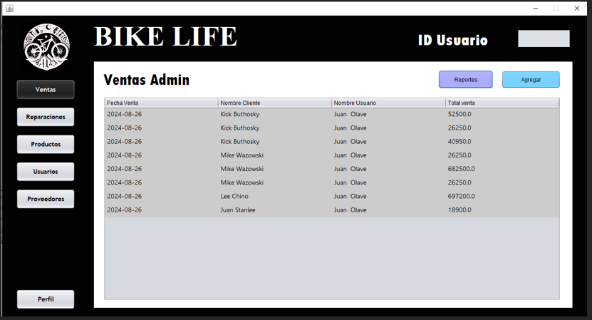
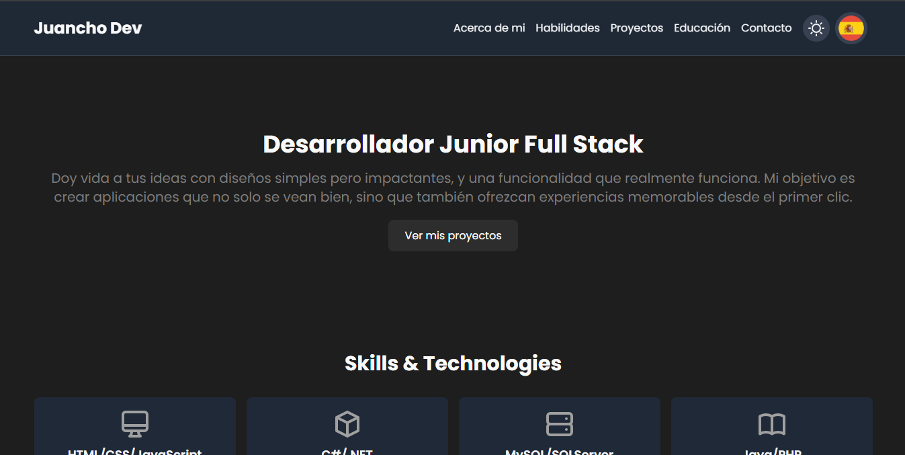
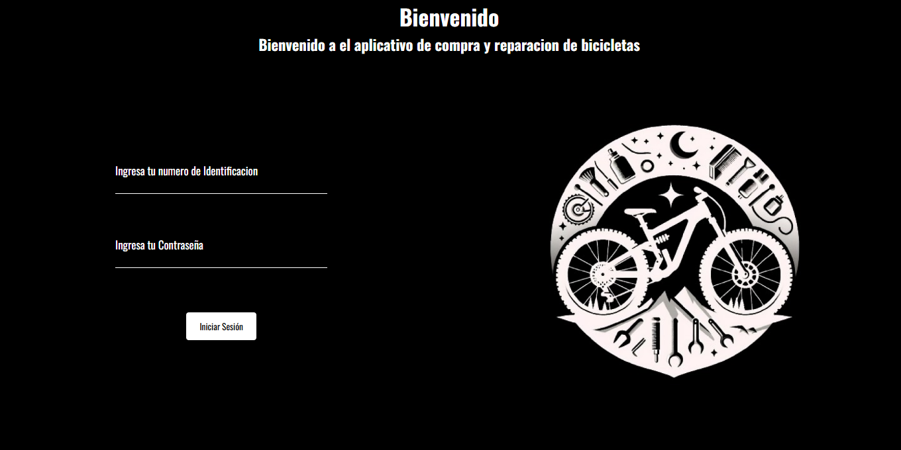

Desarrollador Junior Full Stack
Doy vida a tus ideas con diseños atractivos y funcionalidad impecable. Mi misión es crear aplicaciones que impacten y brinden experiencias memorables desde el primer clic.
Ver mis proyectosProyectos

Blog Informativo ADSO Noticias Software
Desarrollo de web informativa con noticias globales y del SENA, creada con PHP, JavaScript, HTML, CSS y MySQL. Su estructura optimizada permite un acceso rápido a la información, gestionando el contenido directamente en la base de datos.

Aplicativo gestionador de ventas de Bicicleteria
Aplicación en Java con JFrame y MySQL para administrar ventas, inventario y reparaciones en una tienda de bicicletas. Permite gestionar stock, registrar ventas y dar seguimiento a servicios técnicos, optimizando la operación del negocio.

Portafolio
Un espacio donde muestro mis proyectos y habilidades en desarrollo web. Creado con HTML, CSS, JavaScript y Tailwind CSS, este sitio combina diseño moderno, interactividad y una experiencia fluida. Totalmente responsive y optimizado para destacar cada trabajo de forma clara y atractiva. ¡Explóralo y conoce más sobre lo que hago!

Aplicativo web gestionador de ventas de Bicicleteria mediante Api-RestFull
Aplicación web desarrollada con API RESTful, diseñada para gestionar ventas, inventario y reparaciones en una tienda de bicicletas. Utiliza una arquitectura moderna que permite la administración eficiente del stock, el registro de ventas y el seguimiento de servicios técnicos.